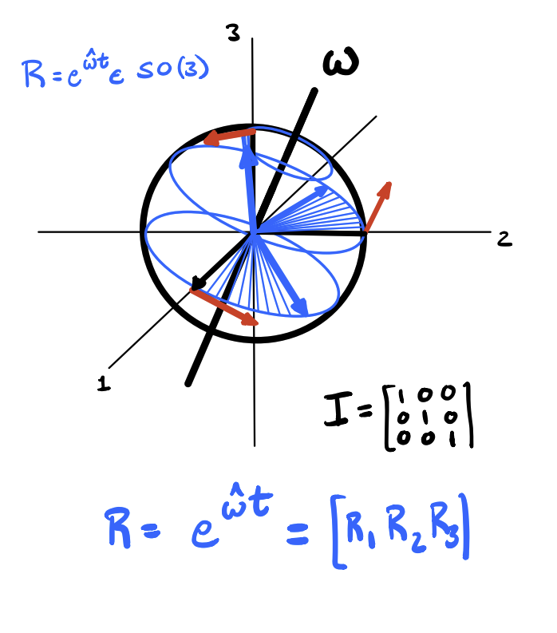
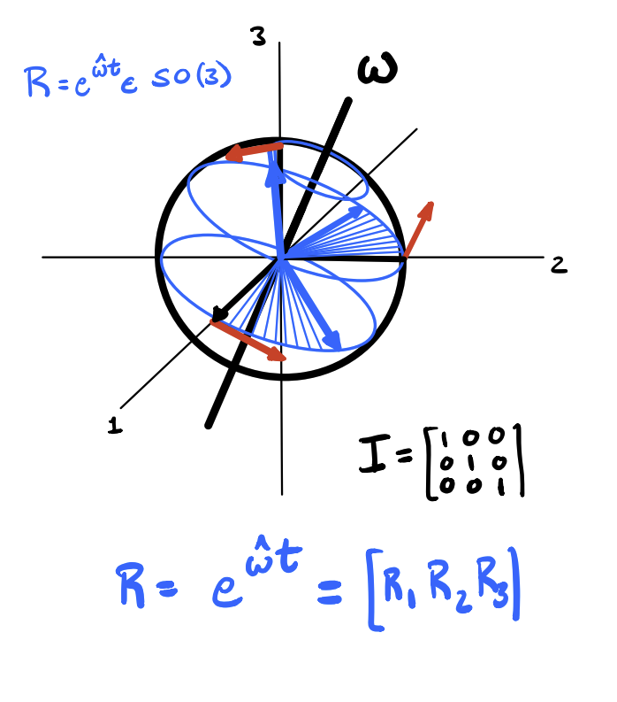

Teaching Interests:
My research interests lie in the intersection of control theory, game theory and cyber-physical systems. My thesis was on extending routing game models to Markov Decision Processes (MDP) to study competition between ride-sharing drivers as well as several other game theoretic models in transportation. At UW, I worked on extensions of the game theory models in my thesis as well as other aspects of learning in games. I also collaborated with Prof. Behcet Ackimese and his team on trajectory planning algorithms using convex optimization. 

Technical Summary:
We extend traditional routing game models to scenarios where agents are solving Markov Decision Processes (MDPs) as opposed to shortest path problems. These models essentially replace the shortest path of objective of agents in a routing game with a stochastic shortest path objective. Our work presents this model in both the finite and infinite horizon cases and serves as a bridge between routing games and mean-field games on graphs, bringing stochastic network transitions into the routing game framework and extending traditional routing game concepts such as price of anarchy and Braess paradox to the mean-field game setup.
Applications:Competition among ride-sharing drivers in urban areas
Competition among urban drivers looking for street parking
Papers:Presentations:
Technical Summary:
Traditional population games consider only populations that are fully uniform, ie. all agents are the same. We extend this framework to situations where populations are modeled as a mass distribution (measure) over a "type space". The location of each agent (or their infinitesimal bit of mass) in the type space indicates that agent's relative preference for various options available to them. The type space has dimension equal to the options available. We consider both the one dimensional case, where all options can be compared on one axis; and the multi-dimensional case where we can model relative preferences among many options. We formulate the appropriate equilibrium concept for these population games and show how this equilibrium can be computed via a potential function. We are currently studying the dual of this potential optimization problem and it's interpretation.
Applications:This framework combines smoothly with traditional congestion game notions and we use it to model hetergeneous populations making transportation choices between disparate options such as driving, walking, biking, or taking various forms of public transit.
Papers: stuff, stuff, stuff...
Technical Summary: Braess paradox is the (in)famous phenomena in routing games where adding roads to a congested network can actually make congestion worse due to the competitive nature of traffic flow. In this work, we provide an in-depth algebraic characterization of this network phenomena in terms of the graph incidence and Laplacian matrices. We also present a graph theoretic exposition of several classical results about Braess paradox; in particular that Braess paradox cannot occur in a series-parallel network. Our current work is extending these results to hypergraphs which covers the case of Braess paradox in MDP congestion games.
Papers stuff, stuff, stuff...
Technical Summary: We add competition for optimal parking spots to routing game models. Our model combines traditional routing game notions with queue theory to formulate a congestion game and corresponding Wardrop equilibrium notion. We then solve this potential game via the appropriate potential function.
Technical Summary: Competition among drivers for urban parking.
Technical Summary: We apply stability notions from linear system theory to study learning dynamics in two-player games with continuous action sets. We present a complete picture of when gradient play is stable (and unstable) in the scalar action case (2x2 game Jacobians). Though straightforward, these results provide much qualitative insight into learning dynamics in different types of games such as potential games, zero-sum games, etc. We then generalize some of these results to the vector action case.
Papers